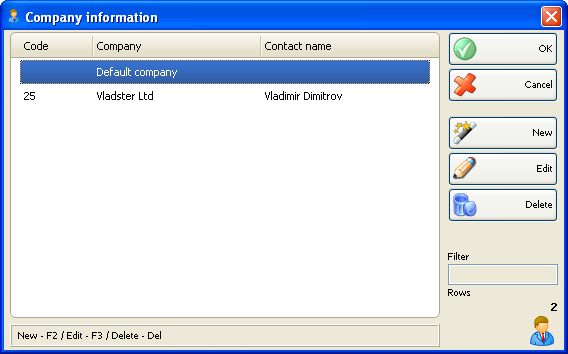

Informatii Companie
Fereastra Informatii Companie se foloseste pentru a introduce datele referitoare la companii, date care se vor afisa si tiparii pe documente care necesita aceste informatii

Se pot folosi butoanele �New, Edit, Delete pentru a crea a companie noua, a edita sau sterge inregistrari existente. Pentru a edita sau sterge o companie existenta trebuie selectata compania inainte si confirmata actiunea de editare sau stergere.
�2006-2012 Microinvest, ������ ����� ��������